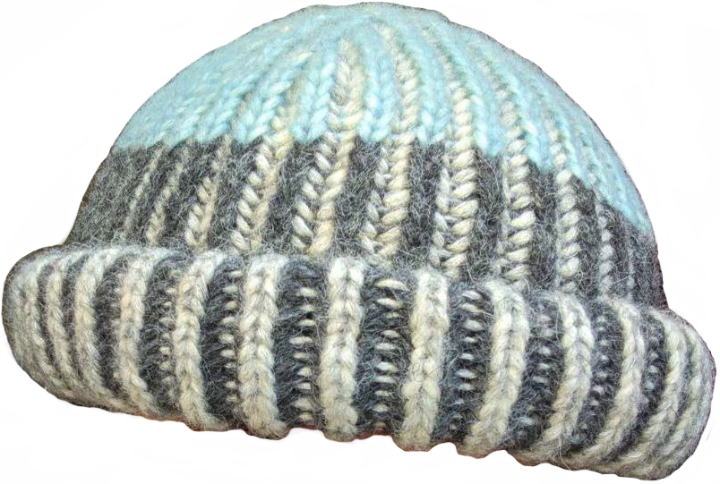
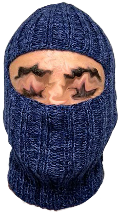

Niecies and Nephies (Red) Blanket 01 Aaron's (Red) Hat 01

Juha Matti's (Blue) Hat 01Lea's (Green) Blanket 01

João's (Blue) Birthday Balaclava 01 Wavy (Rainbow) Balaclava 02 Wavy (Lakey) Balaclava 01 Lenny Lobster (Speckled) Gloves 01 Adina (Cool) Balaclava 01 Snowy Day (Blue/Green) Cape 01 Rainbow Road Set 01 Joan of Arc (Black) Balaclava 01 Little (Rainbow) Set 01 Froggy (Green) Switch Case 01 First (Rainbow) Tank 03 First (Orange) Tank 02 First (Blue/Green) Tank 01 Short (Rainbow) Dress 01 Lenny of My Heart (Red) Top 01